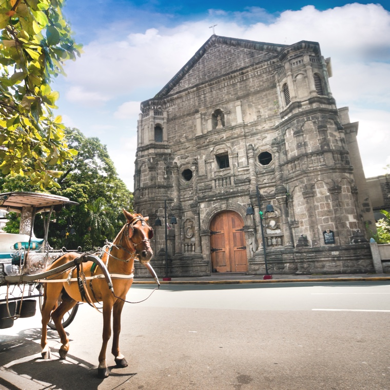

吉隆坡
吉隆坡是馬來西亞的首都兼最大城市，一座對東南亞的文化、教育、體育、財政、經濟、商業、金融都具有極大影響力的國際大都會。
大阪
大阪市是位於日本大阪府中部的都市，為大阪府府治、以及大阪府兩個政令指定都市之一，亦是大阪都市圈、京阪神大都市圈、乃至於近畿地方的中心城市。


東京
東京都區部是指日本東京都轄下的特別區，共23個，為東京都3大構成區塊之一，一般習稱東京23區、東京特別區、東京都心。
馬尼拉
馬尼拉，又稱岷里拉，馬尼剌，是菲律賓首都，位於菲律賓的最大島—呂宋島馬尼拉灣的東岸；今為菲第二大城，人口有150萬。
